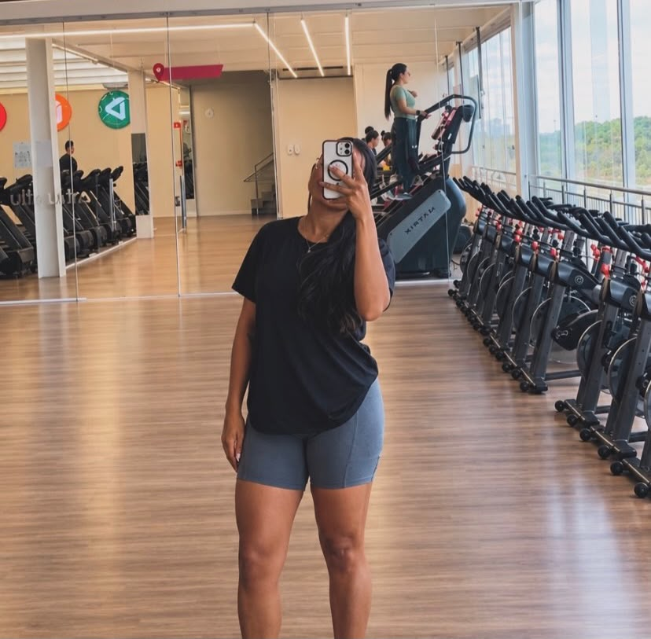
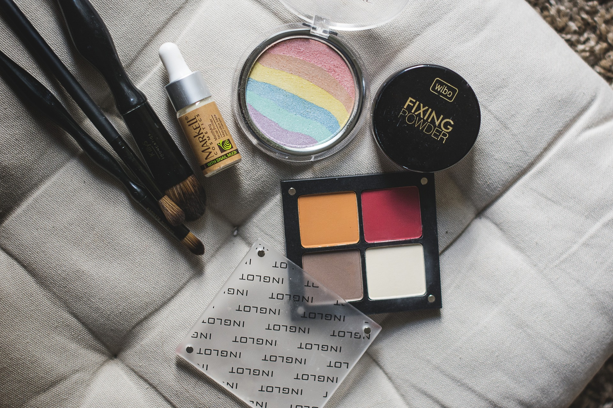
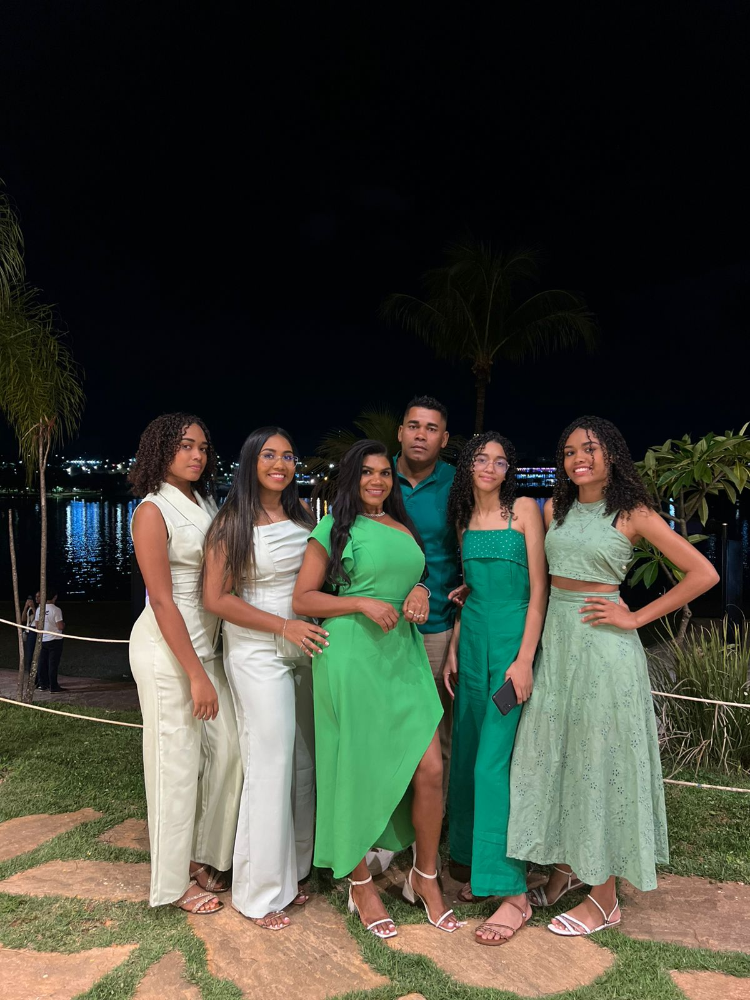
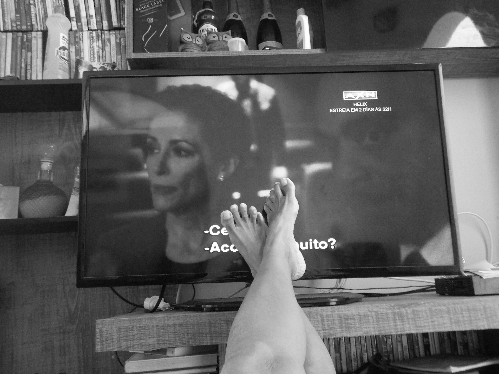
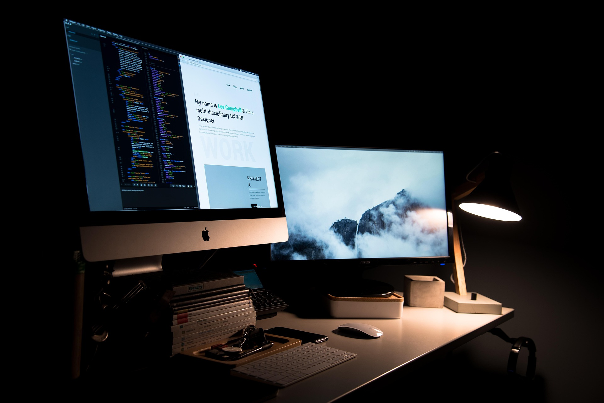

HTML & CSS
Estruturação de páginas e criação de interfaces com estilo e organização.
EM DESENVOLVIMENTODISPONÍVEL PARA APRENDER E COLABORAR
Estou construindo minha jornada na tecnologia, explorando desenvolvimento, programação e soluções que fazem a diferença.
01 def minha_jornada():
02 curiosidade = "sempre"
03 aprender = True
04 return evolução
01 / SOBRE MIM
Sou estudante de Tecnologia da Informação e estou no início da minha trajetória na área. Gosto de aprender na prática, descobrir como as coisas funcionam e transformar ideias em soluções.
Tenho interesse em desenvolvimento e programação, especialmente em Python. Meu objetivo é continuar evoluindo, ampliar minhas habilidades e construir projetos que unam criatividade, lógica e tecnologia.
Vamos trocar ideias? ↗02 / UM POUCO DE MIM
Algumas coisas que fazem parte de mim e da minha rotina.

Uma das coisas que mais gosto de fazer. Gosto de treinar e acompanhar minha evolução!

Gosto de tirar um tempinho para mim, cuidar da minha aparência e me sentir bem.

Amo aproveitar os momentos com minha família e as pessoas importantes para mim.

Gosto de assitir séries e feilmes. principalmente os de romance.
03 / MINHA VIDA PROFISSIONAL
Um pouquinho da minha rotina profissional.

Trabalho na empresa do meu pai, onde atuo nas áreas de gerência, financeiro e administrativo, no ramo de rastreamento veicular.
É uma experiência que me permite aprender coisas novas todos os dias, lidar com diferentes responsabilidades e desenvolver habilidades que também contribuem para minha formação em TI.
04 / MINHA CAIXA DE FERRAMENTAS
Conhecimentos que estou desenvolvendo ao longo da minha formação.
Estruturação de páginas e criação de interfaces com estilo e organização.
EM DESENVOLVIMENTOExplorando lógica de programação e os fundamentos da linguagem.
EM APRENDIZADOConhecendo interatividade e comportamento de páginas web.
EM APRENDIZADOOrganização de projetos, versionamento e construção de portfólio.
EM PRÁTICA05 / O QUE ESTOU CONSTRUINDO
Cada projeto é uma oportunidade de aprender algo novo.
Organização do meu perfil profissional no GitHub, com apresentação, tecnologias e projetos.
Ver no GitHub ↗Propostas para ampliar a vida útil dos aparelhos e incentivar o acesso responsável à tecnologia.
Projeto acadêmicoEste portfólio está em constante atualização. Novos projetos serão adicionados por aqui!
06 / CONTATO
Estou aberta a aprender, colaborar e conhecer novas oportunidades na área de tecnologia.